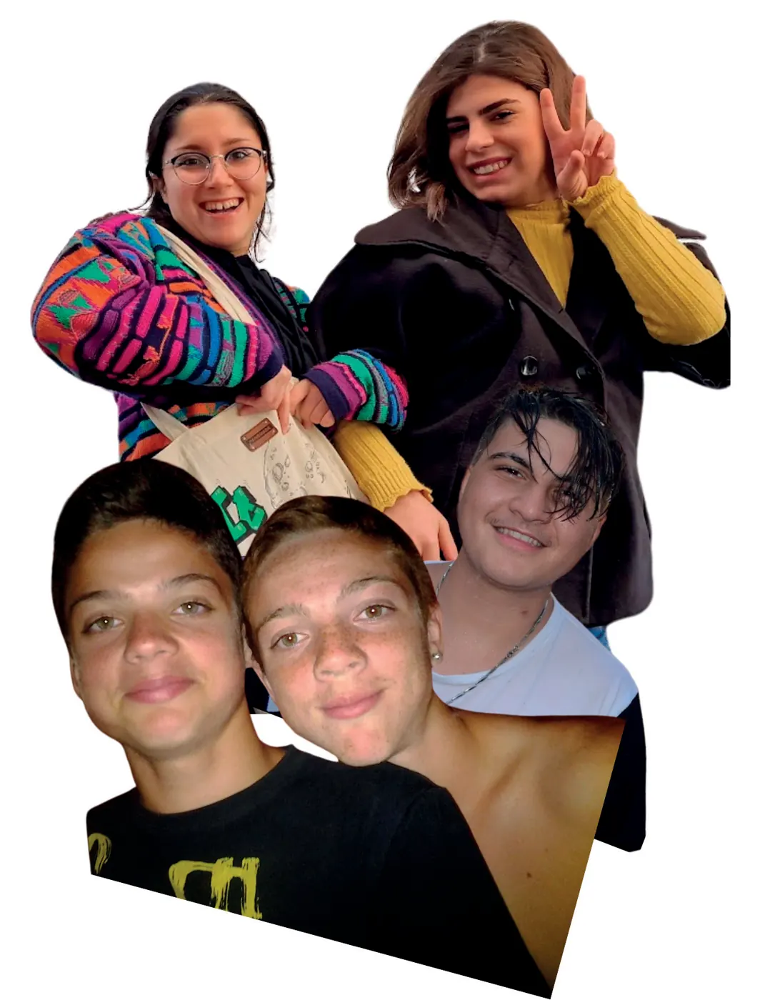

Comunità alloggio
Willy Coyote
Accoglie giovani che hanno bisogno di sostegno nelle sfide della vita e si ispira al personaggio dei cartoni per la sua ostinata determinazione.
È specializzata nelle tematiche LGBTQIA+ e accompagna anche giovani in transizione di genere, con un'assistenza sensibile e competente. Come Willy Coyote, insegna a non arrendersi.